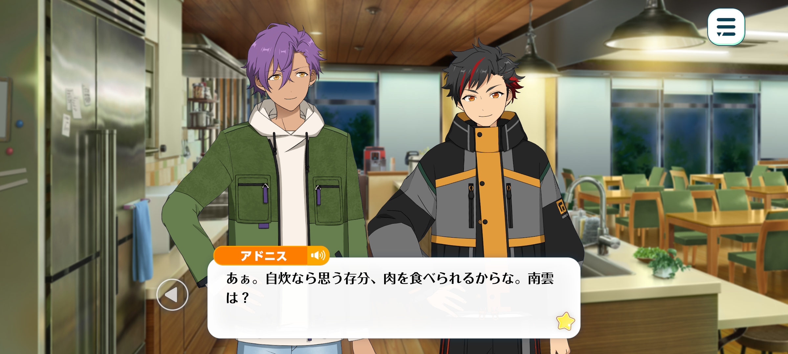
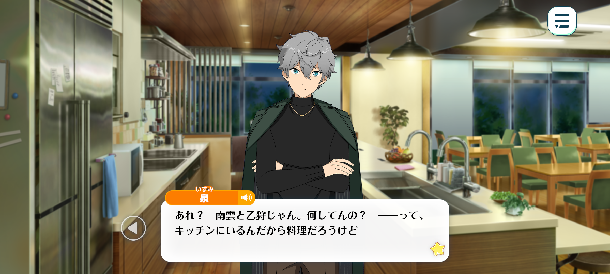
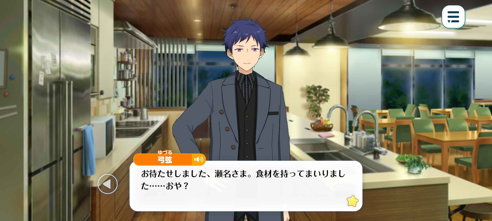
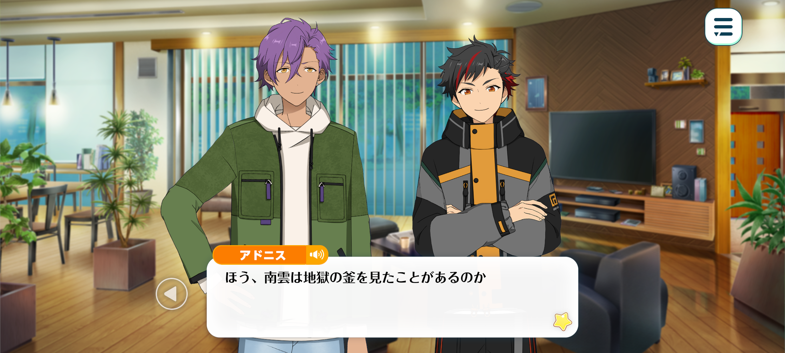
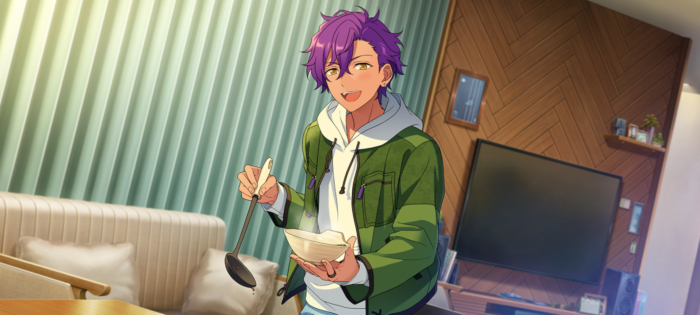

The Joy of Cooking
Idol Story


Season: Winter

Tetora: Ah, Otogari-senpai! What's up?
Funny running into you here! Are you cooking something?
Adonis: Yes. When I cook for myself, I can eat as much meat as I want. What about you?
Tetora: Me? I was getting a little hungry, so I thought I'd make some instant ramen!
Adonis: Instant ramen...? It's convenient, but I'm a little concerned about its nutritional value.
I'll make you something too. You're still growing, after all. You should be eating plenty of meat.
Tetora: Oh, really? Are you sure? Thanks, man!
I can't just stand around while you're cooking, though. Let me give you a hand!
Just tell me what you need! I'll do whatever I can~♪ I'm a little clumsy, though. I actually blew up an oven last time! I just like putting my own spin on things, I guess...☆
Adonis: You've blown up an oven before? That's quite an accomplishment.

Izumi: Oh? Nagumo and Otogari. What are you two do— Well, you're in the kitchen, so obviously you’re cooking.
What are you making? Oh, is that shogayaki?[1]
Adonis: We haven't decided yet. Why do you ask?
...Oh, is it because of that cooking competition we took part in?
Izumi: That's right. You took quite a gamble entering a competition like that, knowing full well you'd be up against people who were extremely confident in their cooking, and all you had to offer was shogayaki.
It's hardly a complicated dish. All you have to do is marinate the meat and fry it. And yet you managed to make such a mess of it, didn't you, Nagumo?[2]
Tetora: Ossu! Thanks for helping us out back then!
(Whispering) Come to think of it, though... wasn't Sena-senpai the one who started all that in the first place...?
Izumi: What was that?
Tetora: N-Nothing!

Yuzuru: My apologies for keeping you waiting, Sena-sama. I've brought the ingredients with me... Oya?
Adonis: Fushimi? Are you cooking as well?
Hmm... That box only has vegetables in it.
Izumi: I'm aiming to make something that's low in calories, highly nutritious, delicious, and good for your skin. Naturally, vegetables are the place to start.
Yuzuru: While Sena-sama is doing this for the sake of his own health, I am learning to cook through Niki's Kitchen for the Young Master.
They seem to have hit it off rather well. They both believe that by combining their ideas, they can create the ultimate nutritious meal.
Now then, shall we get started, Sena-sama? I look forward to working with you.
Tetora: Whoa, I've never seen this many vegetables before...
They both look pretty serious about this. We can't let them get ahead of us!
...Otogari-senpai? What's with that look on your face?
Adonis: ...They're not planning on eating nothing but vegetables, are they?
Meat is just as nutritious as vegetables. I wish they'd include some...
Tetora: Yeah, that'd be good...
If you haven't decided what to make yet, why don't you cook something that both of them would enjoy?
Like something with plenty of meat AND vegetables!
Adonis: Ah... Of course! What a good idea.
However, my knowledge of cooking is rather limited. I don't have any recipes to follow, either. All I really know how to do is skewer, fry, and boil things.
Unlike those two, I'm not clever enough to come up with my own recipes. Perhaps we should go to the library and borrow a cookbook?
Tetora: Or we could just look it up on our phones! Let's see..
Ah, I’ve thought of something! Come here, lemme whisper it to you…
Adonis: Hmm. That sounds like a good plan.
—Sena-senpai, Fushimi. There's something we'd like to ask you.
If you haven't decided exactly what you're going to make yet, would you mind cooking together with us?
Time: Some time later

Tetora: Whoa! It's bubbling like some kind of hellish cauldron~
Adonis: Oh? Have you been to hell before, Nagumo?
Tetora: No, I'm just making a comparison!
Izumi: I considered quite a few different dishes, but in the end, I settled on mizutaki. Who would've thought?[3]
Yuzuru: Fufu. I wouldn't say it's particularly surprising. It's perfect for this time of year, after all.
Adonis: Umu. Warming your body increases your basal metabolic rate, which means you burn more calories. That way, you can eat more boiled vegetables than usual.
What's more, the chicken is delicious. That's the beauty of cooking. Everyone can enjoy a meal together and leave satisfied.
Nagumo, you seem quite familiar with
Tetora: It reminds me of the dish Taishou came up with at our Heart and Soul Training Camp! Eating plenty of meat and vegetables is pretty common at our club activities, too! ☆
Adonis: Really? Then I'll have to thank Kiryu-senpai later.
...Hm? It seems Sena-senpai has only been eating the vegetables.
Izumi: I’m eating more than just vegetables. I’ve having the soup, too.
Adonis: Soup is a drink, though. It's true that the broth made by boiling meat is good for your skin, but unless you eat the meat itself and take in its amino acids, you won't get the full benefits.
Izumi: Jeez, you really know your stuff.
Adonis: I like meat. Surely there's something you like enough to know a lot about?
Izumi: I suppose. I know practically everything there is to know about my beloved Yuu-kun.
Adonis: Umu. Therefore you should eat some meat.
Izumi: You say therefore as if those two things have anything to do with each other.
Whatever. I get it. If you're going to insist, I'll try some.
...Hm. It's actually quite good.
Adonis: Fufu. I'm glad.

After all, meat is wonderful. It makes everyone happy.
Alright then Sena-senpai, I’ll give you the biggest piece.
Izumi: Wait, you're being awfully considerate.
Yuzuru: Fufu. It seems you've become quite the hotpot boss, haven't you?
Adonis: Hotpot boss? I'm not quite sure what that means, but it sounds like a title you'd hear in a period drama. I like it.[4]
From today onwards, I shall be the Hotpot Boss…♪
- pork fried with ginger
- reference to the story Cooking where theres a cooking contest and anzu and sena partner up and adonis and tetora partner up. They're making shogayaki and tetora burns the meat like four times and it takes adonis and kuro physically standing in the way to stop him from turning up the heat lol
- food like vegetables and meat boiled in water
- the word used is 鍋奉行 which is a playful way of just saying the guy who somewhat bossily takes charge of the food at a hotpot. The last two characters are
which means a “shogunate administrator” which is why adonis says that